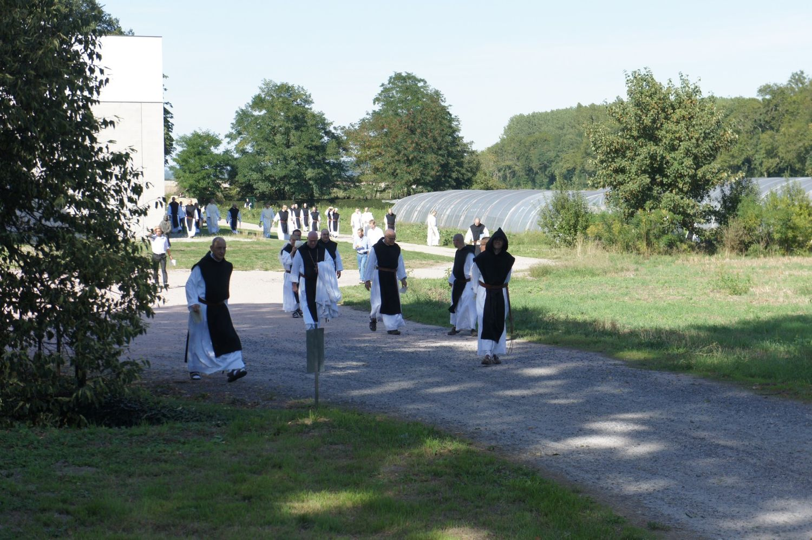
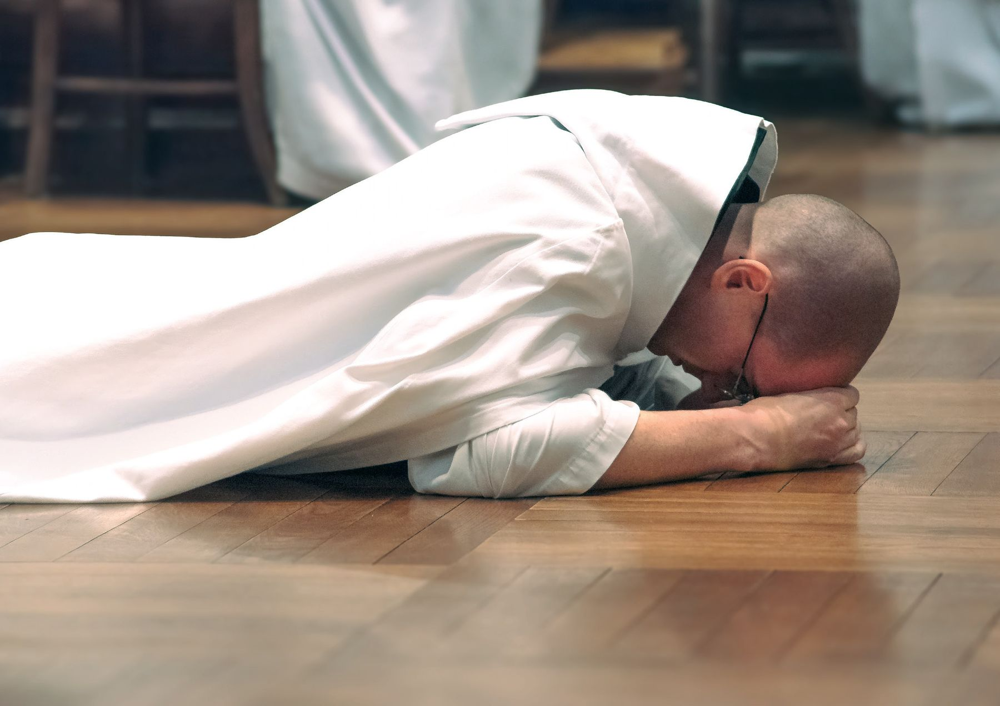

Il n’est pas nécessaire d’avoir tout éclairci avant de commencer à chercher. Mais on ne s’engage pas non plus sans raisons. Pour reconnaître un éventuel appel de Dieu, nous regardons trois signes : un désir profond, les événements qui nous conduisent vers une communauté et, enfin, ce que cette vie fait grandir en nous lorsque nous commençons réellement à la vivre.
Un désir profond, à reconnaître parmi d’autres
Le premier signe est un désir que Dieu met dans notre cœur : chercher son amitié, lui consacrer notre vie, nous donner à lui dans la vie monastique.
Mais notre cœur est habité par de nombreux désirs, parfois contradictoires. Nous pouvons désirer nous donner à Dieu et, en même temps, éprouver le désir d’une relation amoureuse, de fonder une famille, de réussir une carrière ou de construire une maison. L’appel de Dieu ne fait pas disparaître d’un coup toutes les autres aspirations de notre humanité.
Continuer à désirer le mariage ou la vie de famille ne signifie donc pas, à lui seul, que l’on n’a pas de vocation monastique. Il ne faut pas attendre de ne plus rien désirer d’autre pour commencer à prendre au sérieux un possible appel.
Il s’agit plutôt d’apprendre à reconnaître, parmi ces aspirations, le désir profond que Dieu fait grandir en nous. Quelle place prend-il dans notre vie ? Est-il seulement un enthousiasme passager ou une question qui demeure et revient, même lorsque d’autres projets nous attirent ? Sommes-nous prêts à lui donner une réponse concrète ?
Ce désir a besoin d’être peu à peu dégagé, éclairé et purifié. Cela ne signifie pas que les autres désirs seraient nécessairement mauvais, mais qu’ils ne peuvent pas tous orienter notre vie de la même manière. Répondre à un appel demande de choisir et, par conséquent, de renoncer à d’autres possibilités, qui peuvent être bonnes et rester attirantes.
Ce travail ne se fait pas en un jour. Il peut prendre des années. La prière, les rencontres avec la communauté et l’aide de ceux qui nous accompagnent permettent d’y voir progressivement plus clair.
Nous ne cherchons donc pas un cœur sans hésitation ni partage, mais à reconnaître un appel auquel nous pourrons répondre librement, avec toute notre humanité.

Des rencontres qui ouvrent un chemin
Ce désir ne se développe pas à l’écart de notre histoire. Une rencontre, un livre, la découverte d’un monastère ou une conversation peuvent lui donner une direction concrète.
Ce sont parfois des événements très simples. Ils nous font découvrir une vie que nous connaissions peu, nous conduisent vers une communauté et nous invitent à faire un premier pas.
Le désir intérieur et ces événements se répondent. Nous n’y cherchons pas des messages à déchiffrer à tout prix, mais nous apprenons à reconnaître comment Dieu peut nous conduire à travers ce que nous vivons.
Ces deux premiers signes permettent d’envisager une entrée au monastère. Mais ils ne suffisent pas encore à confirmer que nous pourrons y prendre racine.

Une vie dans laquelle on peut grandir
Le troisième signe ne se vérifie qu’en commençant réellement à vivre dans la communauté.
Comme une plante a besoin d’un terrain propice pour prendre racine et se développer, celui qui entre au monastère doit pouvoir y trouver un cadre favorable à sa croissance. Peut-il entrer dans cette vie ? Apprend-il à prier, à vivre avec ses frères, à travailler, à recevoir une formation et à se laisser guider ? Cette vie l’aide-t-elle à grandir dans le don de lui-même et dans l’amour de Dieu ?
Cela ne signifie pas que tout lui sera facile ou agréable. Les difficultés ne suffisent pas à dire qu’il n’est pas à sa place. Mais, à travers les efforts et les épreuves, il faut pouvoir constater qu’il progresse et que cette vie porte du fruit en lui.
Ce regard ne peut pas être seulement le sien. Il a besoin de l’aide de ceux qui l’accompagnent, notamment du père maître et des anciens chargés de sa formation. Leur expérience les aide à discerner avec lui ce qu’il vit, ses capacités et son évolution.
Faut-il donc être certain avant d’entrer ?
On ne possède pas à l’avance une certitude qui dispenserait de faire le chemin. On peut reconnaître des signes assez sérieux pour commencer, sans savoir encore tout ce que la vie monastique nous fera découvrir.
C’est pourquoi le discernement ne s’arrête pas à la porte du monastère. Il se poursuit dans l’expérience de la vie commune. Le désir qui nous a conduits jusqu’ici doit peu à peu recevoir une confirmation dans la réalité vécue, avec l’aide de ceux qui nous accompagnent.
Il ne s’agit ni d’attendre une preuve impossible avant de faire un pas, ni de s’engager aveuglément. Il s’agit d’avancer avec confiance et vérité, en acceptant que l’appel se précise et se confirme au cours du chemin.
Répondre à une invitation
« Le seul fondement solide d’une vocation religieuse est celui-ci : Dieu m’a invité à une vie orientée vers lui seul et j’ai obéi. »